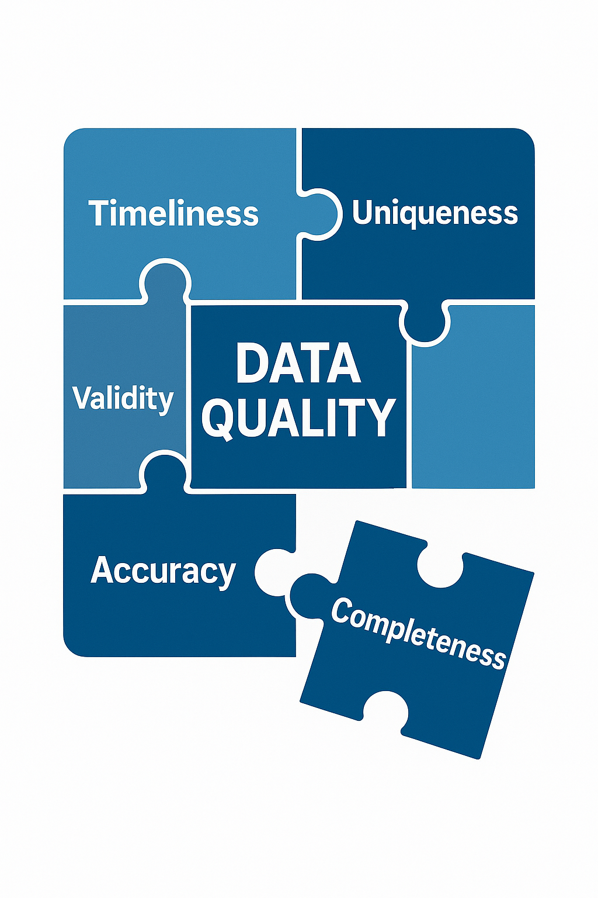
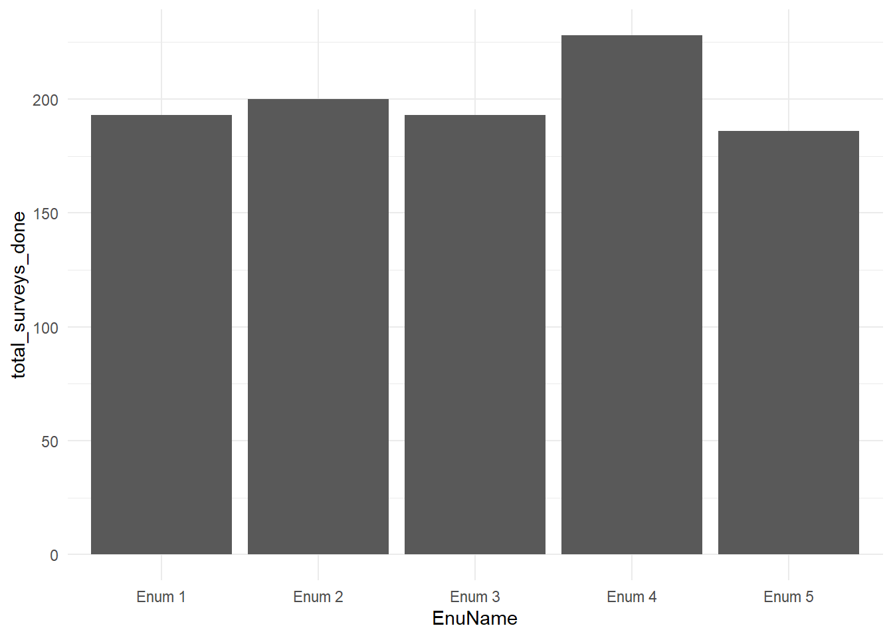
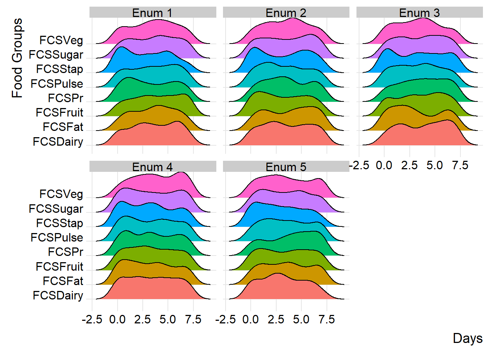
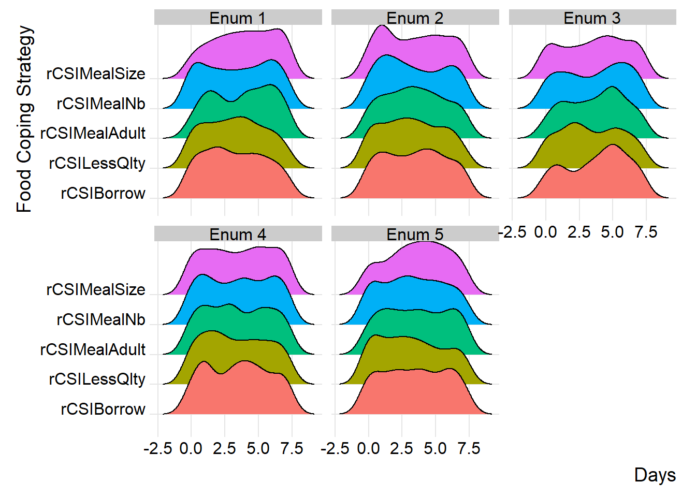
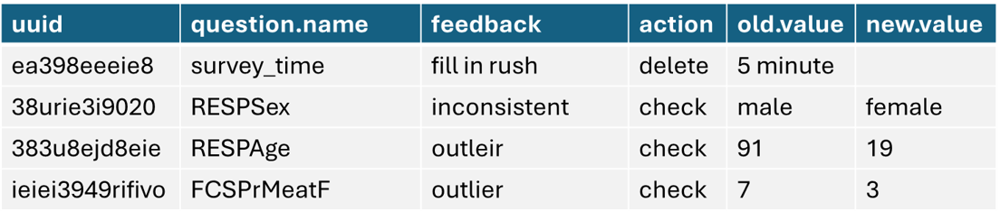

library(tidyverse)
library(readxl)
library(cleanR)
# survey_df <- cleanR::survey_data
survey_df <- read_excel("input/MoDa_Data_2025-03-13.xlsx")2 Data Cleaning & Processing
in each chapter or part of the book, there will be dedicated package, so please ensure to install pre-requisted packages before runing the codes.
Data processing and cleaning is critical part as it involves high frequency checks and spot check for survey data to flag issues that need to be verified and made changes by keeping reference of alterations made to the original data. There are predetermined quality checks that can be applied to any data and as well the data officer can draft unique checks based on the context. This brings the flexibility of adopting existing spot checks and as well adding your own checking parameters to the process and generate cleaning log book.
Data cleaning is an essential step between data collection and data analysis. Raw data is always imperfect and needs to be prepared for a high quality analysis and overall replicability.

Data quality means having accurate, complete, and reliable information. It’s like making sure the puzzle pieces fit perfectly, so we can trust the picture they create. Good data quality helps us make better decisions and understand what’s happening.
2.1 Productivity & Coverage
topics to work!! to be deleted :) - assessment tracking sheet report - assessment productivity - daily valid surveys
2.1.1 Survey Coverage
survey_tracking <- summarise(group_by(survey_df, ADMIN1Name, ADMIN2Name), count = n())
check_survey <- unique(na.omit(survey_df$today))
for(j in check_survey){
survey_tracking[, ncol(survey_tracking) +1] <- (survey_df %>%
group_by(ADMIN1Name, ADMIN2Name) %>%
summarise(val=sum(na.omit(today==j))) %>%
arrange(ADMIN1Name, ADMIN2Name)) $val
names(survey_tracking)[ncol(survey_tracking)] <- paste0("Date:", j)
}
names(survey_tracking)[names(survey_tracking) == 'count'] <- "Total_Surveys"knitr::kable(
head(survey_tracking, 5), caption = 'Survey Tracking Table',
booktabs = TRUE
)| ADMIN1Name | ADMIN2Name | Total_Surveys | Date:1743811200 | Date:1743897600 | Date:1743984000 | Date:1744070400 | Date:1744156800 |
|---|---|---|---|---|---|---|---|
| Admin 1 | 1 | 36 | 8 | 6 | 11 | 4 | 7 |
| Admin 1 | 2 | 24 | 3 | 3 | 8 | 6 | 4 |
| Admin 1 | 3 | 31 | 1 | 4 | 15 | 5 | 6 |
| Admin 1 | 4 | 31 | 2 | 5 | 15 | 6 | 3 |
| Admin 1 | 5 | 42 | 5 | 9 | 14 | 7 | 7 |
2.1.2 Enumerator Performance
# summary of productivity
daily_productivity <- survey_df %>%
arrange(today) %>%
group_by(today) %>%
summarise(surveydate_N = n())
# enumerator level productivity
enum_productivity <- survey_df %>%
group_by(EnuName) %>%
summarise(days_worked = length(unique(today)), total_surveys_done = n(), daily_average = total_surveys_done/days_worked)knitr::kable(
head(enum_productivity, 5), caption = 'Enumerator Productivity',
booktabs = TRUE
)| EnuName | days_worked | total_surveys_done | daily_average |
|---|---|---|---|
| Enum 1 | 5 | 193 | 38.6 |
| Enum 2 | 5 | 200 | 40.0 |
| Enum 3 | 5 | 193 | 38.6 |
| Enum 4 | 5 | 228 | 45.6 |
| Enum 5 | 5 | 186 | 37.2 |
ggplot(enum_productivity, aes(x = EnuName, y = total_surveys_done)) +
geom_bar(stat = "identity") + theme_minimal()
2.2 Standard Checks
2.2.1 Duplicated Surveys
This check will help you to identify if there is duplicated record in the data and in most of the case uuid is the unique identifier which is auto generated.
check_dup_surveys <- check_duplicate_uuid(data = survey_df)The following UUID(s) are duplicated:character(0)2.2.2 Check Missing Data
Before we think about missing data. first lets understand our survey tool as there will be constraints and relevancy logic patterns that will skip some questions if not relevent. after we’re clear from that. we can know anticipate that some questions are mandatory to collect and therefore we need to check how many missing varibles do we have on each. so in case if you see we’re missing 60% or more of key indicator you can check the tool first and than secondly follow with enumerators to undersatnad the pattern and make correction.
check_missing_data <- get_na_response_rates(data = survey_df)knitr::kable(
head(check_missing_data, 5), caption = 'Here is a nice table!',
booktabs = TRUE
)| question | num_non_response | perc_non_response | |
|---|---|---|---|
| ADMIN1Name | ADMIN1Name | 0 | 0 |
| ADMIN2Name | ADMIN2Name | 0 | 0 |
| EnuName | EnuName | 0 | 0 |
| EnuPartner | EnuPartner | 0 | 0 |
| EnuSex | EnuSex | 0 | 0 |
2.2.3 Check Survey Time
- survey ended before start time?
- survey start time before the first day of data collection
- start time after today’s date
lets check surveys which do not end on the same day as they started.
subset(subset(survey_df, as_date(survey_df$start) != as_date(survey_df$end), select = c("EnuName", "start", "end")))# A tibble: 2 × 3
EnuName start end
<chr> <chr> <chr>
1 Enum 5 2025-03-13T11:36:17+0300 2025-04-14T11:25:18+0300
2 Enum 5 2025-03-13T11:08:41+0300 2025-04-14T11:25:18+0300Again lets check surveys that show start time earlier than first day of data collection
subset(subset(survey_df, as.Date(survey_df$start, "%y/%m/%d") < as.Date("2025-04-06", "%y/%m/%d")), select = c("EnuName", "start", "today"))# A tibble: 0 × 3
# ℹ 3 variables: EnuName <chr>, start <chr>, today <dttm>check_survey <- cleanR::survey_time(df = survey_df, time_min = 10, time_max = 30) %>%
log_sheet(question.name = "interview_duration",
issue = " survey filled with less/more time",
action = "check")knitr::kable(
head(check_survey, 5), caption = 'Here is a nice table!',
booktabs = TRUE
)| uuid | question.name | issue | feedback | action | old.value | new.value |
|---|---|---|---|---|---|---|
| 76219b50-cd45-424044-868483-852c3fe17d49 | interview_duration | survey filled with less/more time | check | 46069.0166666667 | ||
| 0e4cd3f5-3dc4-434c4e-aca5a7-0fb6c891de5a | interview_duration | survey filled with less/more time | check | 46096.6166666667 | ||
| 51cb7382-4280-414348-87808e-6f2490e183ac | interview_duration | survey filled with less/more time | check | -121.7 | ||
| 25a3b7cf-0f15-46454e-8c8382-50d6873ecfa1 | interview_duration | survey filled with less/more time | check | -10.2833333333333 | ||
| d2f90a3e-47a5-464d4c-92989e-57dec9b1fa02 | interview_duration | survey filled with less/more time | check | -24.9666666666667 |
2.2.4 Check Other Responses
# first make a list of all other columns included in your data
other_columns <- c("RESPRelationHHH_oth",
"HHAsstOthCBTRecName_oth")
check_others <- check_other_responses(data = survey_df, other_columns = other_columns)knitr::kable(
head(check_others, 5), caption = 'Here is a nice table!',
booktabs = TRUE
)| uuid | question.name | issue | feedback | action | old.value | new.value |
|---|---|---|---|---|---|---|
| 76219b50-cd45-424044-868483-852c3fe17d49 | RESPRelationHHH_oth | Other response that need to be checked and recoded | translate and recode | may be relative | ||
| 76219b50-cd45-424044-868483-852c3fe17d49 | HHAsstOthCBTRecName_oth | Other response that need to be checked and recoded | translate and recode | other response | ||
| 0e4cd3f5-3dc4-434c4e-aca5a7-0fb6c891de5a | RESPRelationHHH_oth | Other response that need to be checked and recoded | translate and recode | dumpy input for spot checks | ||
| 0e4cd3f5-3dc4-434c4e-aca5a7-0fb6c891de5a | HHAsstOthCBTRecName_oth | Other response that need to be checked and recoded | translate and recode | need to translate | ||
| d7cfe208-cb21-4b414c-979c9d-fb9c1a456302 | HHAsstOthCBTRecName_oth | Other response that need to be checked and recoded | translate and recode | looong narative |
2.2.5 Check Outliers
there are two common ways to detect ourtliers, first using the range of 3 standards devitations from the mean and secondly using the range of 1.5 inter quartile from the 2st and 3rd uartile.
detect_outliers <- function(data) {
# Select only numeric columns
numeric_data <- data |>
select(where(is.numeric))
# Pivot to long format to handle all variables uniformly
outlier_data <- numeric_data |>
pivot_longer(everything(), names_to = "variable", values_to = "value") |>
mutate(
log_value = log(value),
is_outlier_raw = abs(value - mean(value, na.rm = TRUE)) > 3 * sd(value, na.rm = TRUE),
is_outlier_log = abs(log_value - mean(log_value, na.rm = TRUE)) > 3 * sd(log_value, na.rm = TRUE),
type = case_when(
is_outlier_raw & is_outlier_log ~ "both",
is_outlier_raw ~ "raw",
is_outlier_log ~ "log",
TRUE ~ "none"
)
) |>
filter(type != "none") |>
select(variable, value, log_value, type)
return(outlier_data)
}
outliers_check <- detect_outliers(data = survey_df)knitr::kable(
head(outliers_check, 5), caption = 'Here is a nice table!',
booktabs = TRUE
)| variable | value | log_value | type |
|---|---|---|---|
| Lcs_em_Migration | 9999 | 9.21024 | raw |
| Lcs_em_Begged | 9999 | 9.21024 | raw |
| Lcs_stress_Saving | 9999 | 9.21024 | raw |
| Lcs_stress_BorrowCash | 9999 | 9.21024 | raw |
| Lcs_crisis_ProdAssets | 9999 | 9.21024 | raw |
2.3 Specefic Checks
This is the power house of the concept as it will not be possible to log all issues that need to inspected from data due to the dynamics of different livelihood zones, socio-economic status and other attributes. therefore this specefic checks unit will show you how to first identify and log all issues that need to be addressed/flagged. the below log sheet function topic will guide you how to master the process.
2.3.1 Demographics Checks
2.3.2 Food Consumption Check
The calculate_fsl_indicators function is a powerful tool for computing essential food security and livelihood (FSL) indicators, including the food consumption score, household dietary diversity, reduced coping strategy, and livelihood coping strategy, from your raw data.
survey_df <- calculate_fsl_indicators(data = survey_df,
# FCS
FCSStap = "FCSStap",
FCSPulse = "FCSPulse",
FCSPr = "FCSPr",
FCSVeg = "FCSVeg",
FCSFruit = "FCSFruit",
FCSDairy = "FCSDairy",
FCSFat = "FCSFat",
FCSSugar = "FCSSugar",
cutoff = "Cat28",
# rCSI
rCSILessQlty = "rCSILessQlty",
rCSIBorrow = "rCSIBorrow",
rCSIMealSize = "rCSIMealSize",
rCSIMealAdult = "rCSIMealAdult",
rCSIMealNb = "rCSIMealNb",
# HHS
HHhSNoFood_FR = "HHhSNoFood_FR",
HHhSBedHung_FR = "HHhSBedHung_FR",
HHhSNotEat_FR = "HHhSNotEat_FR",
# HDDS
# HDDSStapCer = "HDDSStapCer",
# HDDSStapRoot = "HDDSStapRoot",
# HDDSVeg = "HDDSVeg",
# HDDSFruit = "HDDSFruit",
# HDDSPrMeat = "HDDSPrMeat",
# HDDSPrEgg = "HDDSPrEgg",
# HDDSPrFish = "HDDSPrFish",
# HDDSPulse = "HDDSPulse",
# HDDSDairy = "HDDSDairy",
# HDDSFat = "HDDSFat",
# HDDSSugar = "HDDSSugar",
# HDDSCond = "HDDSCond"
)By incorporating ridge charts into your analysis, you can easily identify patterns and variations in FCS and rCSI across different clusters or field monitors.
(plot_ridge_distribution(survey_df, numeric_cols = c("FCSStap", "FCSPulse", "FCSPr", "FCSVeg", "FCSFruit", "FCSDairy", "FCSFat", "FCSSugar"),
name_groups = "Food Groups", name_units = "Days", grouping = "EnuName"))
By carefully examining and interpreting the ridge chart, you can gain valuable insights into the distributions and flag any inconsistency for validation and review during data collection. in the below chart, we’ll group the reduced coping strategies at area office level.
(plot_ridge_distribution(survey_df, numeric_cols = c("rCSILessQlty", "rCSIBorrow", "rCSIMealSize", "rCSIMealAdult", "rCSIMealNb"),
name_groups = "Food Coping Strategy", name_units = "Days", grouping = "EnuName"))
similarly, you can group distributions at field monitor level to gain more insight at the consistency of reported distributions across different monitors.
(plot_ridge_distribution(survey_df, numeric_cols = c("rCSILessQlty", "rCSIBorrow", "rCSIMealSize", "rCSIMealAdult", "rCSIMealNb"),
name_groups = "Food Coping Strategy", name_units = "Days", grouping = "EnuName"))
2.4 Apply Cleaning Log
logbook is the main power-hourse and it will help you flag your data based on the standard and specefic checks and log them in one format and send it to field team for review and feedback and finally use the new value information to replace with the old values in order to generate clean data. using log_sheet() you can achive it all.

2.5 Spatial Verification
In order to ensure the accuracy and relablity of data we need to run spatial verification checks that will help us to determine if the data or the point is collected on the right location. for instance, lets assume we’re doing school feeding programme baseline and want to collect 2 surveys from 5 schools in two districts. 10 surveys were than uploaded into the MoDa server after 3 days. and now we need to check if the schools visited are the right sampled ones first, and secondly if the distribution of the data is also aligning with the schools.